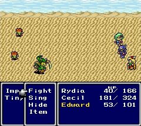
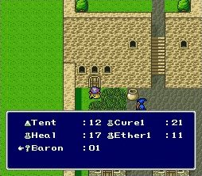
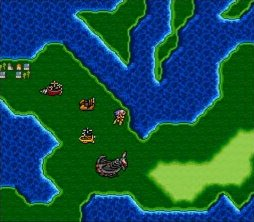
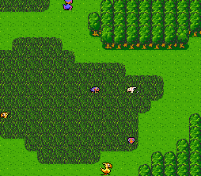
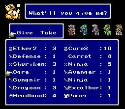
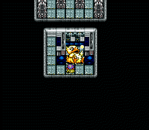
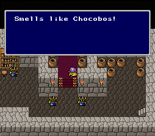

|
System
ภาคนี้จะใช้ระบบเพิ่มระดับตัวละคร (Level) โดยการเก็บสะสมประสบการณ์ (Experience)
ซึ่งได้จากการฆ่าศัตรู เมื่อฆ่าศัตรูแล้ว นอกจากประสบการณ์แล้ว ยังจะได้รับ
Gil (หน่วยเงิน)
ตัวละครในภาคนี้จะสลับสับเปลี่ยนกันเข้าออกในกลุ่มหลายครั้ง และหลายคน
แต่จะมีตัวละครเดินเรื่องหลักอยู่เพียงคนเดียวคือ Cecil
ซึ่งตัวละครแต่ละตัว จะมีอาชีพที่แตกต่างกันไป ตั้งแต่
นักรบ, นักเวทย์, กวี, ช่างซ่อม, นักบวช ฯลฯ
โดยแต่ละอาชีพ ก็จะมีความสามารถที่แตกต่างกันไป

(ตัวละครแต่ละตัวต่างก็มี Skill ที่แตกต่างกัน)
ในการดำเนินเรื่อง บางครั้งอาจต้องใช้ item กับผู้คน หรือสิ่งของด้วย
ทำได้โดยการกดพูดคุย หากเขาต้องการ item จะสามารถให้ได้
หรือหากสิ่งนั้นต้องใช้ item ก็จะมีคำสั่งให้กดใช้โผล่ขึ้นมา

การเดินทางในภาคนี้ มียานภาหนะมากมาย หลายแบบมาก
ทั้งยาน over craft, เรือเหาะ, ยานที่ขุดดินได้, ยานอวกาศไปดวงจันทร์

หรือแม้แต่ Chocobo ที่เป็น Character ยอดฮิตของเกมนี้
ก็ยังมีถึง 3 สีด้วยกัน
เหลือง : ใช้สำหรับขี่บนพื้นดิน และจะไม่เจอศัตรูขณะขี่
ขาว : ใช้เติม MP ให้เต็ม
ม่วง : สามารถบินได้ แต่จะขึ้นและลงได้เฉพาะภายในป่าเท่านั้น

นอกจาก Chocobo 3 สีแล้ว ยังมี Fat Chocobo อีกด้วย
ใช้สำหรับฝาก item ที่ไม่ต้องการเก็บไว้ และสามารถถอนออกมาใช้ได้

(เรียกใช้ได้ โดยการใช้ Carrot ในที่ที่ถูกต้อง)

(บนยานเหาะก็มี Fat Chocobo เหมือนกัน)

(ในเมืองใต้ภิภพก็มี Fat Choboco เหมือนกัน)
ความสนุกของภาคนี้จะอยู่ที่การค้นหาอาวุธในตำนาน การค้นหาสัตว์อสูร (Summon)
ส่วนเวทย์มนต์ต่างๆ นั้น จะเรียนรู้ตามระดับ Level
อีกทั้งการได้เจอเพื่อนร่วมกลุ่มคนใหม่ๆ ที่ความสามารถใหม่ๆ ก็เป็นจุดน่าสนใจ
สรุป
ระบบในภาคนี้ไม่ยุ่งยากมากนัก
เพียงเก็บประสบการณ์และระดับของตัวละครมากๆ ก็สามารถจบเกมได้อย่างง่ายดาย
|